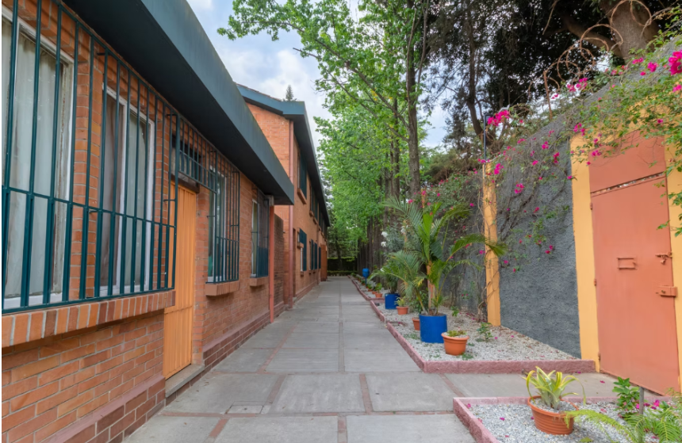
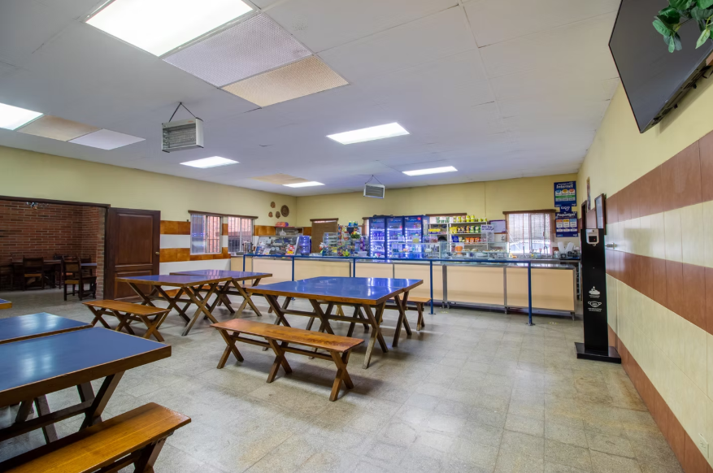
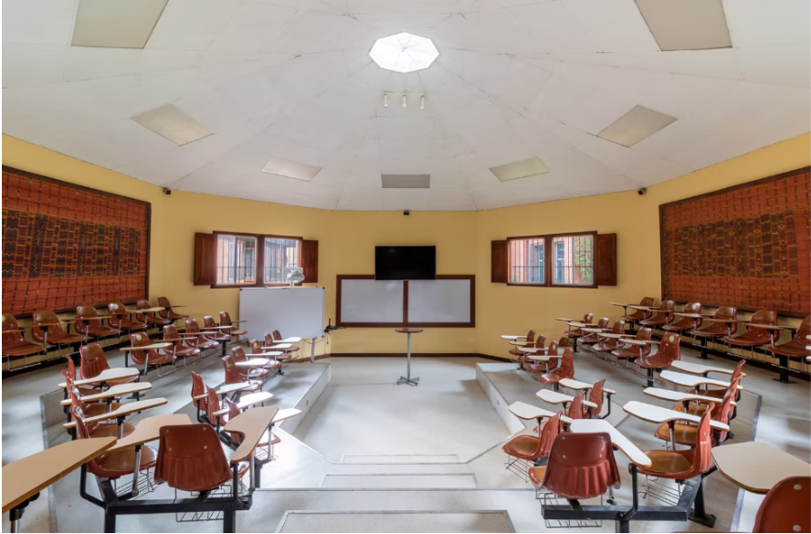

Educación con propósito y visión de futuro
En Kinal impulsamos el desarrollo integral de nuestros estudiantes combinando formación técnica, valores humanos y preparación laboral real. Nuestro compromiso es formar profesionales capaces, responsables y preparados para transformar Guatemala.
Nuestra Historia
Fundado en 1972, Kinal nació con el propósito de brindar educación técnica de calidad a jóvenes guatemaltecos. Durante más de cinco décadas hemos formado generaciones de profesionales que hoy aportan al crecimiento del país.


Misión y Visión
Misión: Formar técnicos competentes con sólidos valores humanos y excelencia académica.
Visión: Ser la institución líder en formación técnica en Guatemala, reconocida por su calidad educativa y compromiso social.


Carreras Técnicas
Ofrecemos programas académicos diseñados para responder a las necesidades del mercado laboral actual. Cada carrera combina teoría y práctica intensiva en laboratorios especializados.
- Perito en Informática y Desarrollo de Software
- Electrónica Industrial
- Mecánica Automotriz
- Electricidad Industrial
- Diseño Gráfico Digital
- Administración de Empresas


Infraestructura Moderna
Contamos con instalaciones equipadas con tecnología avanzada que garantizan un aprendizaje práctico y alineado con las exigencias del mundo profesional.




Valores Institucionales
- Disciplina
- Responsabilidad
- Respeto
- Trabajo en equipo
- Solidaridad
- Innovación
Testimonios de Éxito
"Gracias a la formación recibida en Kinal logré emprender mi propio negocio con bases sólidas."
— Iverson Perez, Promoción 2018
"La preparación técnica me permitió ingresar a una empresa internacional en el área industrial."
— Alan Lacan, Promoción 2020
Admisiones Abiertas 2026
Da el primer paso hacia tu futuro profesional. Forma parte de una institución que apuesta por la excelencia académica y el desarrollo integral.
¿Por qué este rediseño es más atractivo?
Este rediseño es más atractivo porque tiene una mejor organización, colores más llamativos y una estructura más clara que facilita la lectura.
Además, incluye una navegación más ordenada, lo que hace que la página sea más dinámica y fácil de usar en cualquier dispositivo.
Volver al Inicio